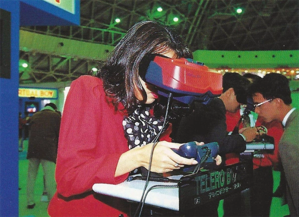

-
1985
The Journey Begins
The story of the Virtual Boy began not in Japan, but in Cambridge, Massachusetts. Around 1985 an engineer named Allen Becker came up with the idea of using LEDs to create a head-mounted personal display. Dubbed a Scanned Linear Array (SLA), the device was cheap, easy to mass-produce and had multiple applications; Becker saw it as a means of viewing information when both hands were needed to do other work. For example, doctors could use it to check vital signs or scans during surgery.
The one and only Allen Becker -
1986
Private Eye enters the game
Becker formed Reflection Technology, Inc and the device was given a fancy new name: Private Eye. Predating the likes of Google Glass by many years, the technology was shown off at various trade shows but no progress was made on turning it into a viable, selling product - until the virtual reality boom happened.
 The Private Eye, 25 years before google glass
The Private Eye, 25 years before google glass -
1988
Hitting the headlines!
COMDEX show in Las Vegas, where several publications selected the Private Eye as one of the must-see gadgets at the show. The appearance generated immense press attention–including prominent features in Popular Science and Popular Mechanics–and brought in thousands of potential sales leads.
 Magazine promoting the Private Eye
Magazine promoting the Private Eye -
1990
The virtual boy we all know of begins to take form
The engineers at Reflection put together a video game demo using two Private Eye units mounted to a welder’s mask. They attached a primitive head-tracking apparatus that monitored the movement of the wearer’s head. The dual displays linked up to a luggable IBM PC-compatible computer that ran a tank simulation game.
Allen Becker trying on an early prototype of the virtual boy -
1991
Rejections and new horizons
After rejections from Mattel, Hasbro, and Sega, Steve Lipsey flexed his connections and flew to Kyoto to pay a visit to video game behemoth Nintendo Co., Ltd.–the mother company of all worldwide Nintendo subsidiaries.
Steve Lipsey, the Vice President of sales at Reflection -
1992
Nintendo joins the party!
Nintendo enthusiastically received the Private Eye, as led by Gunpei Yokoi. He saw this as a unique technology that competitors would find difficult to emulate. Nintendo entered into an exclusive agreement with Reflection Technology, Inc. to license the technology for its displays. Yokoi was 49 years old, and suddenly, an unexpected opportunity to move Nintendo in a new direction landed right in front of him. It put his retirement plans on hold. Additionally, the resulting game console was intended to enhance Nintendo's reputation as an innovator and to "encourage more creativity" in games. Codenaming the project "VR32".
 The vr32 prototype
The vr32 prototype -
1993
Internal pressures
Nintendo chief Yamauchi approached 1994 with trepidation. The whole industry knew the year would see the launch of two major next-gen consoles, the Sega Saturn and the Sony PlayStation, while Nintendo’s own next-gen contender, the Ultra 64 (later renamed Nintendo 64), would not be ready until 1996. Yamauchi encouraged R&D1 to complete the Virtual Boy and ready it for release as soon as possible to buy time prior to the launch of the Nintendo 64.
 Another legendary Nintendo console, the nintendo 64 prototype - the ultra 64
Another legendary Nintendo console, the nintendo 64 prototype - the ultra 64 -
1994
All aboard the hype train!
Nintendo first showed Virtual Boy to the public at the Shoshinkai Software Exhibition in Harumi in Japan. Attendees could play games like Space Pinball and Teleroboxer, a boxing game. Reaction in Japan proved tepid, with a mix of astonishment at the stereoscopic technology but bewilderment about its all-red display and its target retail price, which was expected to be around U.S. $200
The virtual boy at Shoshinkai -
Early 1995
Haters gonna hate
The Virtual Boy made its U.S. debut at the Winter CES show in Las Vegas. Few large media outlets criticized the system before its release, expressing guarded optimism on behalf of the monstrously successful Nintendo. Meanwhile, the enthusiast press on the nascent web didn’t pull any punches. “My biggest beef is Nintendo trying to pass this off to the public as virtual reality. It’s not,” wrote Michael Lambert for an early online video game fanzine after trying the Virtual Boy at CES.
 1995 Winter CES at Las Vegas
1995 Winter CES at Las Vegas -
Mid 1995
Ready! Set! Liftoff?.
In the months leading up to the Virtual Boy’s launch in Japan, the media there seized onto Nintendo’s health and eyesight warnings and sensationalized them, implying that the Virtual Boy was definitely bad for players’ eyes. It should be no surprise then, that when the Virtual Boy launched in Japan, the system was met with little enthusiasm. Unlike the Super Famicom, which had seen shoppers line up on the street waiting to buy a system, no one lined up for the Virtual Boy.
The virtual boy at ShoshinkaiLate 1995America strikes back!
Luckily for Nintendo of America, the American press had not piled on the Virtual Boy for health reasons, so when it launched for $179.95, sales seemed brisk at first. In the U.S, Nintendo had partnered with Blockbuster to rent out Virtual Boy systems so people could try it for themselves, a unique strategy to get around the difficultly of conveying the system’s 3D effect in print and TV advertising. In Japan things were looking dim for the system. By December, it had sold only 140,000 units in its home country, a deeply embarrassing failure by Nintendo standards. Yamauchi decided to pull the plug on the Virtual Boy in Japan–only six months after its release–so as to not expend any more money on an obvious flop.
 Blockbuster advertisment for its rental schemeEarly 1996
Blockbuster advertisment for its rental schemeEarly 1996The sun sets on the land of the rising sun
In Japan things were looking dim for the system. By December, it had sold only 140,000 units in its home country, a deeply embarrassing failure by Nintendo standards. Yamauchi decided to pull the plug on the Virtual Boy in Japan–only six months after its release–so as to not expend any more money on an obvious flop.
Hiroshi Yamauchi, 3rd President of Nintendo from 1949-2002Mid 1996Dark times
After a showing at E3, Nintendo dropped mention of the Virtual Boy from its marketing plans, and in August of that year, it officially pulled the plug once and for all. Virtual Boy began showing up in the clearance aisles of toy stores like Toys “R” Us for $30 or less. Back in Massachusetts, Reflection Technology reeled at the turn of events. Most shocked of all was Allen Becker, who had essentially bet the company on the success of the Virtual Boy.
ad for the Virtual Boy, promoting its $80 discountLate 1996The industry is shaken
Yokoi tendered his resignation. After nearly 31 years with Nintendo, and four years after he originally planned to do so. His departure shocked the industry. Both American and Japanese press could not help but link his departure to the commercial failure of the Virtual Boy. “Yokoi was very troubled by these reports, which were all based on misunderstandings,”
The virtual boy at ShoshinkaiEarly 1997A titan falls
One month after leaving Nintendo, Yokoi founded a company called Koto Laboratory, along with Yoshihiro Taki, an R&D1 colleague who had left at around the same time. Tragically, Yokoi did not get to enjoy his career rebirth for long. On October 4, 1997–just over a year after he left Nintendo–he was involved in a minor traffic accident on a highway 200 miles north of Tokyo. As he and the driver of the car exited the vehicle to inspect the damage, another car sped by and struck Yokoi, killing him. He was 56 years old.
 Gunpei Yokoi, creator of the Nintendo GameBoy and Virtual BoyLate 1997
Gunpei Yokoi, creator of the Nintendo GameBoy and Virtual BoyLate 1997Keep on trying...
Reflection Technology, which had hoped to parlay the system into an IPO. FaxView went into production in late 1995, but it failed to take off, so the firm sought more investments and hunkered down into research mode but the failure of the Virtual Boy hit the company hard, and the FaxView also flopped at retail. The firm was apparently working on a full-colour version of its technology around 1997, but ran out of cash before it could bring the device to market.
 The faxview, a virtual reality gadget for viewing faxes... create!2001
The faxview, a virtual reality gadget for viewing faxes... create!2001Becoming a legacy
Ever restless, founder Al Becker soon moved on to another venture involved with water purification technology for developing nations. This quest was cut short when, on October 14, 2001, he died unexpectedly at his home of a ruptured artery while watching TV. He was 53. For both Yokoi and Becker, the flawed brilliance of the Virtual Boy is part of an impressive legacy—daring launch, stunning failure, and all.
 The Virtual Boy, proudly standing at the Perth Museum and Art Gallery
The Virtual Boy, proudly standing at the Perth Museum and Art Gallery
SHIFT+SCROLL TO MOVE WITH MOUSE